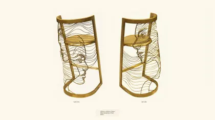
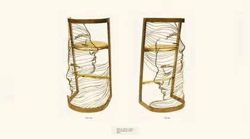
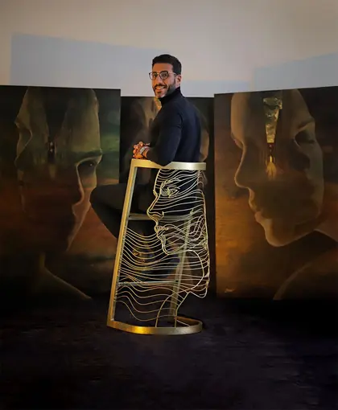
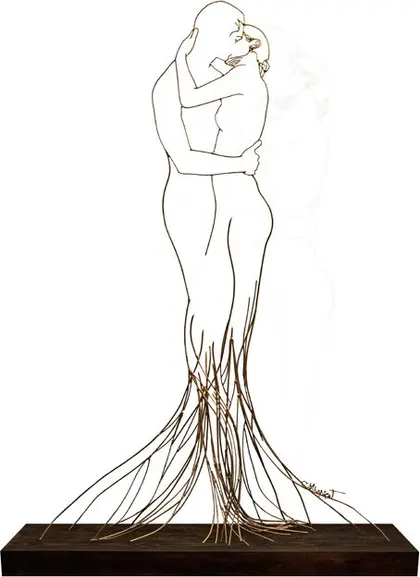

Every image recovered from the old Wix site, with its white padding trimmed and its true aspect ratio measured. Nothing here is published. This sheet exists so a person can check the trims before anything lands.
These trim to under 1200px on the long edge — too small for a detail page. This is the list of paintings that need rephotographing.
| Exhibition (as labelled) | Recovered size | Ratio | Asset |
|---|---|---|---|
| sakan 2019 | 1056×660 | 1.60 | 88a84b221f22 |
| sakan 2019 | 530×660 | 0.80 | 059356d53dc0 |
| sakan 2019 | 445×660 | 0.67 | c7d72f4470b3 |
| sakan 2019 | 532×660 | 0.81 | 393d95fb54d5 |
| sakan 2019 | 552×660 | 0.84 | 5576f23b038b |
| sakan 2019 | 474×660 | 0.72 | d45153bac6ba |
| sakan 2019 | 746×660 | 1.13 | 77ffae8a944d |
| sakan 2019 | 803×660 | 1.22 | 83e88eab70ad |
| sakan 2019 | 476×660 | 0.72 | 075b523c6bca |
| sakan 2019 | 444×660 | 0.67 | f9b390c84612 |
| sakan 2019 | 664×660 | 1.01 | 7c4f0211faa4 |
| sakan 2019 | 443×660 | 0.67 | 19c69748cc0b |
| sakan 2019 | 300×660 | 0.45 | fcdee3b439e3 |
| SOUL 2016 | 1084×660 | 1.64 | 34fe06c5e772 |
| SOUL 2016 | 991×660 | 1.50 | 80a32111c37e |
| SOUL 2016 | 421×660 | 0.64 | 269e2e30a1a0 |
| SOUL 2016 | 746×660 | 1.13 | 49935591b001 |
| SOUL 2016 | 454×624 | 0.73 | 1db2350a80d5 |
| SOUL 2016 | 666×660 | 1.01 | 277550afdefa |
| SOUL 2016 | 1181×363 | 3.25 | b7be57ded06a |
| SOUL 2016 | 269×626 | 0.43 | 7fb40871a78f |
| SOUL 2016 | 1013×660 | 1.53 | c5d129cb7fba |
| SOUL 2016 | 474×660 | 0.72 | 5c7c38b80f72 |
| SOUL 2016 | 270×475 | 0.57 | 3c62708485f4 |
| HORRA 2017 | 1019×660 | 1.54 | bad6da474af8 |
| HORRA 2017 | 468×660 | 0.71 | 00e0027a325a |
| HORRA 2017 | 468×660 | 0.71 | 880e33947ed7 |
| HORRA 2017 | 462×660 | 0.70 | 467e71c6f718 |
| HORRA 2017 | 640×660 | 0.97 | 9c209fddfc32 |
| HORRA 2017 | 1181×363 | 3.25 | 6b8719503d28 |
| HORRA 2017 | 477×660 | 0.72 | 909fab8d2874 |
| HORRA 2017 | 533×660 | 0.81 | 3fc92944d86f |
| HORRA 2017 | 684×660 | 1.04 | 021f09ad7ec3 |
| HORRA 2017 | 623×660 | 0.94 | da1fdfbfc4cc |
| HORRA 2017 | 757×614 | 1.23 | 779393f6fb7d |
| HORRA 2017 | 616×660 | 0.93 | 3f2e78dc0fc3 |
| HORRA 2017 | 478×660 | 0.72 | 8e7a64526cdd |
| HORRA 2017 | 514×660 | 0.78 | 560db7b148dc |
| HORRA 2017 | 502×660 | 0.76 | f8b256386415 |
| HORRA 2017 | 823×660 | 1.25 | 6324a9c43f8d |
| HORRA 2017 | 452×660 | 0.68 | c8d4419bb71b |
| HORRA 2017 | 435×660 | 0.66 | 0555cdc62661 |
| HORRA 2017 | 980×660 | 1.48 | 7db8248b0d48 |
| caravan | 1025×660 | 1.55 | 8ce69558b6a4 |
| caravan | 1036×660 | 1.57 | 025a590d6262 |
| caravan | 1026×660 | 1.55 | e28469cebe1b |
| caravan | 479×660 | 0.73 | 64468ab19568 |
| caravan | 658×660 | 1.00 | a78a047b8131 |
| caravan | 468×660 | 0.71 | 27d2a0563494 |
| caravan | 547×660 | 0.83 | 035f16229918 |
| caravan | 468×660 | 0.71 | 3b4bb0a2c68e |
| caravan | 821×660 | 1.24 | 48dde6a99e04 |
| caravan | 661×660 | 1.00 | 28b8c99a2b65 |
| caravan | 659×660 | 1.00 | b267b2bc7825 |
| caravan | 670×660 | 1.02 | 94233651da79 |
| caravan | 930×660 | 1.41 | f2df4bfe3eb4 |
| caravan | 665×660 | 1.01 | 750326d93dba |
| caravan | 242×660 | 0.37 | af78a4f38cd2 |
| caravan | 475×660 | 0.72 | bbba0330e9f8 |
| caravan | 525×660 | 0.80 | 20bdbdab9915 |
| caravan | 1004×660 | 1.52 | 2a2d1cc3a634 |
| caravan | 1100×344 | 3.20 | 43a99f5108da |
| caravan | 1072×315 | 3.40 | e4f82255019b |
| caravan | 834×654 | 1.28 | dace0b236ead |
| caravan | 497×660 | 0.75 | 4406b9fa97c7 |
| wsal 2025 | 1181×660 | 1.79 | 402f2255799e |
| wsal 2025 | 505×660 | 0.77 | 5c6f828e02bb |
| wsal 2025 | 660×660 | 1.00 | c3640f6bcab1 |
| wsal 2025 | 309×660 | 0.47 | 05388b1bb250 |
| wsal 2025 | 549×660 | 0.83 | 4431780d9c5e |
| wsal 2025 | 560×660 | 0.85 | 7b6fbd396be7 |
| wsal 2025 | 479×660 | 0.73 | 7b27e073d77a |
| wsal 2025 | 444×660 | 0.67 | 31a9e2cdb6ed |
| wsal 2025 | 472×660 | 0.72 | 89b228bd9110 |
| wsal 2025 | 452×660 | 0.68 | d25a25a7022f |
| wsal 2025 | 948×660 | 1.44 | 094b68481329 |
| wsal 2025 | 666×660 | 1.01 | 75d06ee5b100 |
| wsal 2025 | 1074×660 | 1.63 | e47f2ec76b6f |
| wsal 2025 | 1181×561 | 2.11 | d658a1082989 |
| wsal 2025 | 670×660 | 1.02 | 2c71a401603e |
| wsal 2025 | 1047×660 | 1.59 | 18b1383bfcc8 |
| wsal 2025 | 600×660 | 0.91 | c0d380642375 |
| wsal 2025 | 674×660 | 1.02 | 2e281c3a54c7 |
| wsal 2025 | 683×660 | 1.03 | 0ab06e942293 |
| wsal 2025 | 1181×539 | 2.19 | 4ecb0febb24f |
| wsal 2025 | 502×660 | 0.76 | 10cb696a7b24 |
| wsal 2025 | 1054×660 | 1.60 | fb82cfd3e3af |
| wsal 2025 | 1072×660 | 1.62 | f836cd5c9fe6 |
| wsal 2025 | 641×641 | 1.00 | d324a6a47d76 |
| wsal 2025 | 435×660 | 0.66 | 2b57c1a6915f |
| Illustrations (blank page) | 496×645 | 0.77 | 2694c2184dfb |
| Illustrations (blank page) | 594×586 | 1.01 | 5239e54ef32f |
| Illustrations (blank page) | 459×612 | 0.75 | 2e1cf87f5386 |
| Illustrations (blank page) | 479×614 | 0.78 | 610e6e08744f |
| Illustrations (blank page) | 449×612 | 0.73 | ca656deeb95d |
| Illustrations (blank page) | 567×616 | 0.92 | 31c94c98c696 |
| Illustrations (blank page) | 519×534 | 0.97 | 5282255b9792 |
⚠ This page's slug and its rendered title disagree. The work → exhibition mapping here is untrusted and must be confirmed by the artist before anything is published.
88a84b221f22
059356d53dc0
c7d72f4470b3
393d95fb54d5
5576f23b038b
d45153bac6ba
77ffae8a944d
83e88eab70ad
075b523c6bca
f9b390c84612
7c4f0211faa4
19c69748cc0b
fcdee3b439e3
2b6a1c0963d5
b0ec0ac8c1e6
e7be8fd1192f
1c0059a793b0
d8bb3a64b486
561597747620
5902d40a6e15
e7f3bd3facd8
62b90b89feab
ba6b64c504aa
fcb3ef3ddff2
af2d698eda11
bf1af288049c
39d9945b7765
1c481876245f
57cc244d6500
3d7bb1c0e723
bb3fc3aca972
49f39e312d43
d1fb25885a8f

72a9f9e9b956

5bb79ed26f8b

b6d2f3673a58
⚠ This page's slug and its rendered title disagree. The work → exhibition mapping here is untrusted and must be confirmed by the artist before anything is published.
34fe06c5e772
80a32111c37e
269e2e30a1a0
49935591b001

1db2350a80d5
277550afdefa
b7be57ded06a
7fb40871a78f
c5d129cb7fba
5c7c38b80f72
3c62708485f4
⚠ This page's slug and its rendered title disagree. The work → exhibition mapping here is untrusted and must be confirmed by the artist before anything is published.
3f9449ee154b
549637d41e0f
275301ea6aa9
40149f4c7d6c
4663bca13087
5351e9212530
ffe5e4fed56a
c61eef4db6f2
b67e79cfaee4
a8599be0cac4
c2526cbf0c1c
7fdea8cdfe69
3b87f806171e
52f4ddb6deed
89e76fdba30f
bad6da474af8
00e0027a325a
880e33947ed7
467e71c6f718
9c209fddfc32
6b8719503d28
909fab8d2874
3fc92944d86f
021f09ad7ec3
da1fdfbfc4cc
779393f6fb7d
3f2e78dc0fc3
8e7a64526cdd
560db7b148dc
f8b256386415
6324a9c43f8d
c8d4419bb71b
0555cdc62661
7db8248b0d48
8ce69558b6a4
025a590d6262
e28469cebe1b
64468ab19568
a78a047b8131
27d2a0563494
035f16229918
3b4bb0a2c68e
48dde6a99e04
28b8c99a2b65
b267b2bc7825
94233651da79
f2df4bfe3eb4
750326d93dba
af78a4f38cd2
bbba0330e9f8
20bdbdab9915
2a2d1cc3a634
43a99f5108da
e4f82255019b
dace0b236ead
4406b9fa97c7
402f2255799e
5c6f828e02bb
c3640f6bcab1
05388b1bb250
4431780d9c5e
7b6fbd396be7
7b27e073d77a
31a9e2cdb6ed
89b228bd9110
d25a25a7022f
094b68481329
75d06ee5b100
e47f2ec76b6f
d658a1082989
2c71a401603e
18b1383bfcc8
c0d380642375
2e281c3a54c7
0ab06e942293
4ecb0febb24f
10cb696a7b24
fb82cfd3e3af
f836cd5c9fe6
d324a6a47d76
2b57c1a6915f
2694c2184dfb
5239e54ef32f
2e1cf87f5386
610e6e08744f
ca656deeb95d
31c94c98c696
5282255b9792